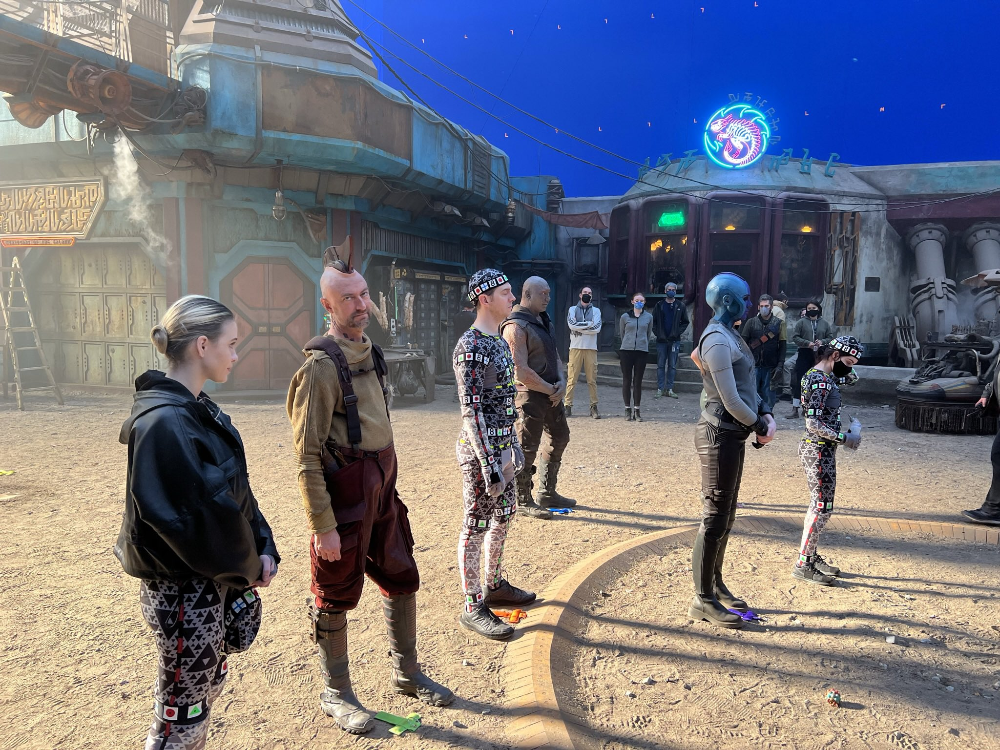

미디어 쿼리
미디어 쿼리는 화면 크기에 따른 각각의 속성 값을 지정하여, 여러가지 화면을 구성하는 기술입니다.
@media: 미디어 쿼리가 시작됨을 표시합니다.
only" 미디어 쿼리 구문을 해석하라는 명령어입니다.(생략가능)
all: 미디어 쿼리를 해석해야 할 대상을 나타냅니다.(생략가능)
and: 앞과 뒤의 조건을 나타냅니다.(생략가능)
(조건문) : 해당 조건을 설정할 수 있습니다.
{실행문} : 조건에 따른 실행을 설정합니다.
